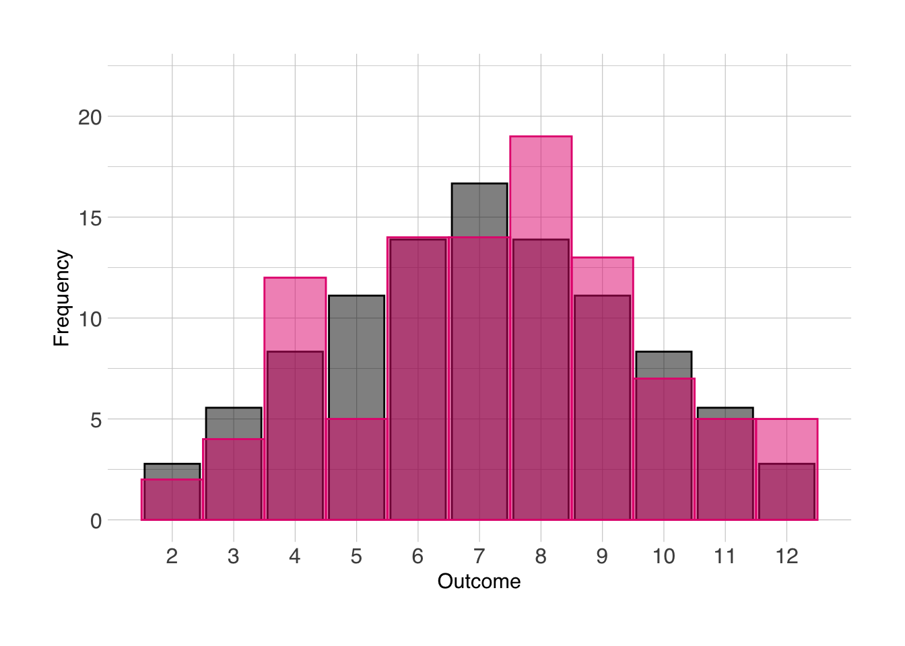

13 Appendix: semi-advanced R
Now, if all the stuff that I discussed earlier was too simple for you already, then you may be interested in the next section. This will go over some more advanced methods and tools within R. If the previous sections were already a challenge, then I’d actually urge you to skip this step and get a good hold of the principles discussed above before moving on to this section as to avoid freaking you out with complicated looking code.
13.2 For-loops
Now, for those of you that are left, hello! In this section we’ll go over loops, the pipe, and long vs. wide formats. We’ll start with the simplest, the “for”-loop. The for loop I can explain in a simple way. In the example below, we loop over a variable called vector, which is also a vector from one to ten. The principle of a for loop is that the code within the loop remains the same, but one variable changes. The changing variable is the variable that is “looped over”. I the example, the loop has 10 iterations, and in the first iteration the variable i, has the value 1, in the second the value 2, and in the tenth the value 10. The context in which we’ve used it now, in the first iteration, the loop will print a vector from i to 11. As i increases, the list will become shorter and shorter. Note how the first number in each iteration is always equal to i, and the last number always 11.
## [1] 1 2 3 4 5 6 7 8 9 10 11
## [1] 2 3 4 5 6 7 8 9 10 11
## [1] 3 4 5 6 7 8 9 10 11
## [1] 4 5 6 7 8 9 10 11
## [1] 5 6 7 8 9 10 11
## [1] 6 7 8 9 10 11
## [1] 7 8 9 10 11
## [1] 8 9 10 11
## [1] 9 10 11
## [1] 10 11The for loop is particularly useful for situations where one needs to run the same code multiple times. I use it often in situations where I have multiple files that I want to combine in one data frame, or when I want to apply the same operation on multiple variables with similar names (e.g. "edge1" to "edge210"). The for loop is very useful, but it’s relatively slow and sometimes difficult to read, but it is definitely better than any lapply() function or similar, since that’s ugly code. I am aware that some people on online help forums like lapply() and recommend it quickly, but I think writing a for loop is definitely preferred.
13.3 The pipe
The pipe (%>%) was probably the most useful function I have learned to use. The principle of the pipe is that it takes whatever the previous data or function output was and it puts it into the next function. Let’s try it with the filter() function, we want to select only the healthy controls in the next dataset, and I’ll show two ways of using the same function with and without the pipe. Then we’ll check if both data frames are identical with the all.equal() function.
data_HC1 <- filter(data, Pasient_Kontroll == "Control")
data_HC2 <- data %>% filter(Pasient_Kontroll == "Control")
all.equal(data_HC1, data_HC2)## [1] TRUESo we see that both data frames are identical. I find that the pipe is useful, especially when you use the pipe more than once. Let’s try this example again. First we’ll select only the schizophrenia-spectrum patients only, then select only participants in the age range 20 to 30, and then we want to summarise the total PANSS scores for each diagnosis category within this spectrum. We calculate the mean and standard deviation of the PANSS score for each diagnosis. The group_by() function is very useful! You can add the group_by() function in almost any situation, and it will apply the functions further down the pipe by group instead of for the whole dataset. I use it a lot. If you want to remove the grouping, you can use ungroup() at the end.
data_p <- data %>%
filter(Diag_collapsed == "SCZ_spect",
AgeBaseline >= 20 & AgeBaseline <= 30) %>%
group_by(Diag_category) %>%
summarise(mean_panss = mean(score_panss, na.rm = TRUE),
sd_panss = sd(score_panss, na.rm = TRUE),
n = n())
print(data_p)## # A tibble: 3 x 4
## Diag_category mean_panss sd_panss n
## <fct> <dbl> <dbl> <int>
## 1 schizoaffective 57.3 12.7 67
## 2 schizophrenia 68.2 18.4 347
## 3 schizophreniform 54 14.8 3013.4 Working with dates
At some point in your analysis, you might have to work with dates, for instance to calculate the difference between two dates to obtain the age. Working with dates is a messy job in any software, and R is no exception. Let’s look at some particularly messy data. We have a dataset of 5 individuals, we have their date of birth, the date of the first interview, and the date of the second interview. We are interested in two things, the age at the first interview, and the time between the first and second interview. Let’s have a look at our little dataset.
## names DoB interview1 interview2
## 1 Lucie 03/11/'78 03.05.2015 20170607
## 2 Ane 20/12/'88 30.08.2015 20171004
## 3 Andreas 15/05/'77 28.03.2016 20180412
## 4 Kyrre 18/06/'90 15.12.2016 20190201
## 5 Vilde 29/01/'86 30.11.2017 20190108Looks pretty straightforward right? Let’s also have a look at the column types:
## 'data.frame': 5 obs. of 4 variables:
## $ names : Factor w/ 5 levels "Andreas","Ane",..: 4 2 1 3 5
## $ DoB : Factor w/ 5 levels "03/11/'78","15/05/'77",..: 1 4 2 3 5
## $ interview1: Factor w/ 5 levels "03.05.2015","15.12.2016",..: 1 4 3 2 5
## $ interview2: num 20170607 20171004 20180412 20190201 20190108So we see that we have a number of character columns, which are interpreted as factors, and one numeric one. In order to work with dates appropriately, we need to convert all of these into a standard format. There’s a simple function for this: as.Date(). This function converts a character column into the standardized date format. Note that it only takes a character column as input, and no numeric or integer ones. We’ll get back to that issue later. The as.Date() function takes another input, the format in which it should interpret the character string. There’s a couple of items here, for instance %d stands for “day”, %m stands for “month”, %y stands for a two-digit year (i.e. ’82), %Y stands for a four-digit year (i.e. 1982). If you had a character string that looked like this: "17/02/1992", then the format you’d put in the as.Date() function would look like this: "%d/%m/%Y", and "01.26.65" would be "%m.%d.%y".
Let’s tidy up our data first, and then we’ll get to the calculations later. We’ll use the pipe we described before, as well as the mutate() function, we’ll do all three conversions at the same time, hopefully so you can see the pattern. Since the format of the interview2 column is a numeric one, we’ll have to convert that to a character format first, we’ll do that inside the as.Date() function by using the as.character() function.
data <- data %>%
mutate(DoB = as.Date(DoB, format = "%d/%m/'%y"),
interview1 = as.Date(interview1, format = "%d.%m.%Y"),
interview2 = as.Date(as.character(interview2), format = "%Y%m%d"))Let’s now have a look at the data again:
## names DoB interview1 interview2
## 1 Lucie 1978-11-03 2015-05-03 2017-06-07
## 2 Ane 1988-12-20 2015-08-30 2017-10-04
## 3 Andreas 1977-05-15 2016-03-28 2018-04-12
## 4 Kyrre 1990-06-18 2016-12-15 2019-02-01
## 5 Vilde 1986-01-29 2017-11-30 2019-01-08We can see that the date columns are now converted to a standard date format, this format looks like this "%Y-%m-%d". Now all our date columns are in a unified standardized format. Let’s now do some calculations, for this we’ll use the {lubridate} package. We want to calculate age at the first interview, and the time between the first and second interview. Let’s calculate age first.
We’ll use the difftime() function to calculate the difference between two timepoints, in our date, the date of birth, and the time of the first interview.
## Time differences in days
## [1] 13330 9749 14197 9677 11628We see that it gives us the difference in days. We’re not particularly interested in how old people are in days, we’re particularly interested in years. However, dividing by 365.25 is not entirely accurate, and many other manual methods will undoubtedly give us a massive headache. Especially when we have to account for the year 2000, which should not have been a leap year, but was. Luckily there’s a package that handles this headache for us, the {lubridate} package (not to be misread as “lubricate”). This package contains one particularly useful function, called time_length(). This function takes the time difference in days and converts it to whatever you specify you want to get back (specified in the unit option). Let’s do it:
## [1] 36.52055 26.70959 38.89589 26.51233 31.85753We now have a number of ages for our participants, with decimals. If we don’t want that, we can round it:
## [1] 37 27 39 27 32If we wanted to add this as a column to our data frame, we could combine the steps above into one. It would look something like this:
data <- data %>%
mutate(age_intv1 = round(time_length(difftime(interview1, DoB), unit = "years")))
print(data)## names DoB interview1 interview2 age_intv1
## 1 Lucie 1978-11-03 2015-05-03 2017-06-07 37
## 2 Ane 1988-12-20 2015-08-30 2017-10-04 27
## 3 Andreas 1977-05-15 2016-03-28 2018-04-12 39
## 4 Kyrre 1990-06-18 2016-12-15 2019-02-01 27
## 5 Vilde 1986-01-29 2017-11-30 2019-01-08 32Let’s say you wanted to know the difference between the first and second interview in weeks with decimals (I don’t know why anyone would prefer to know it in weeks rather than days or years, but I won’t judge). We can do that! Just for fun, we’ll also calculate the age of the participant at the second interview at the same time,
data <- data %>%
mutate(interval = time_length(difftime(interview2, interview1), unit = "weeks"),
age_intv2 = round(time_length(difftime(interview2, DoB), unit = "years")))
print(data)## names DoB interview1 interview2 age_intv1 interval age_intv2
## 1 Lucie 1978-11-03 2015-05-03 2017-06-07 37 109.42857 39
## 2 Ane 1988-12-20 2015-08-30 2017-10-04 27 109.42857 29
## 3 Andreas 1977-05-15 2016-03-28 2018-04-12 39 106.42857 41
## 4 Kyrre 1990-06-18 2016-12-15 2019-02-01 27 111.14286 29
## 5 Vilde 1986-01-29 2017-11-30 2019-01-08 32 57.71429 33And now you have the age of the partipant at the two interview, and the difference (in weeks) between the first and second interview. The syntax for these calculations isn’t particularly complicated, but it takes some cognitive effort to recognize the patterns. Anyway, other than punching the age of the participant when collecting the data, this is the easiest and cleanest way I could think of for dealing with dates in R.
13.5 Animations
Remember that animation I used in the “distributions” section, here’s how I made it. Creating animations from ggplot objects is pretty simple with the {gganimate} package. First I created a perfect distribution, and repeated it 10 times, then I created 10 different random distributions, and then repeated the first one as the last one. This last step was necessary to make sure the transitions would be smooth throughout the animation. Then I created the ggplot object, and added the transition_time() function to tell the {gganimate} package what variable to create the animation over. Then I also added the ease_aes() layer to create smooth transitions with tiny pauses at each step.
library(gganimate)
n_replications <- 100
norm <- data.frame()
temp <- data.frame()
for (i in 1:11) {
temp <- data.frame(
sum_norm = seq(2,12),
prob_norm = c(1/36, 2/36, 3/36, 4/36, 5/36, 6/36, 5/36, 4/36, 3/36, 2/36, 1/36) * n_replications,
it = i
)
norm <- rbind(norm,temp)
}
outcomes_anim <- data.frame()
temp <- data.frame(x = 1:n_replications)
for (i in 1:10) {
temp$it <- rep(i,n_replications)
temp$sum_rand <- replicate(n = n_replications, expr = sum(sample(1:6, 2, replace = TRUE)))
outcomes_anim <- rbind(outcomes_anim,temp)
}
outcomes_anim <- rbind(outcomes_anim, outcomes_anim %>% filter(it == 1) %>% mutate(it = 11)) %>%
mutate(it = as.integer(it))
ggplot() +
geom_col(data = norm, mapping = aes(x = sum_norm, y = prob_norm),
color = "black", fill = "black", alpha = 0.5) +
geom_histogram(data = outcomes_anim, mapping = aes(x = sum_rand),
color = norment_colors[["magenta"]], fill = norment_colors[["magenta"]], alpha = 0.5, binwidth = 1) +
scale_x_continuous(breaks = seq(2,12)) +
labs(x = "Outcome",
y = "Frequency") +
theme_norment() +
theme(
panel.grid.minor.x = element_blank()
) +
transition_time(it) +
ease_aes('cubic-in-out')##
Frame 1 (1%)
Frame 2 (2%)
Frame 3 (3%)
Frame 4 (4%)
Frame 5 (5%)
Frame 6 (6%)
Frame 7 (7%)
Frame 8 (8%)
Frame 9 (9%)
Frame 10 (10%)
Frame 11 (11%)
Frame 12 (12%)
Frame 13 (13%)
Frame 14 (14%)
Frame 15 (15%)
Frame 16 (16%)
Frame 17 (17%)
Frame 18 (18%)
Frame 19 (19%)
Frame 20 (20%)
Frame 21 (21%)
Frame 22 (22%)
Frame 23 (23%)
Frame 24 (24%)
Frame 25 (25%)
Frame 26 (26%)
Frame 27 (27%)
Frame 28 (28%)
Frame 29 (29%)
Frame 30 (30%)
Frame 31 (31%)
Frame 32 (32%)
Frame 33 (33%)
Frame 34 (34%)
Frame 35 (35%)
Frame 36 (36%)
Frame 37 (37%)
Frame 38 (38%)
Frame 39 (39%)
Frame 40 (40%)
Frame 41 (41%)
Frame 42 (42%)
Frame 43 (43%)
Frame 44 (44%)
Frame 45 (45%)
Frame 46 (46%)
Frame 47 (47%)
Frame 48 (48%)
Frame 49 (49%)
Frame 50 (50%)
Frame 51 (51%)
Frame 52 (52%)
Frame 53 (53%)
Frame 54 (54%)
Frame 55 (55%)
Frame 56 (56%)
Frame 57 (57%)
Frame 58 (58%)
Frame 59 (59%)
Frame 60 (60%)
Frame 61 (61%)
Frame 62 (62%)
Frame 63 (63%)
Frame 64 (64%)
Frame 65 (65%)
Frame 66 (66%)
Frame 67 (67%)
Frame 68 (68%)
Frame 69 (69%)
Frame 70 (70%)
Frame 71 (71%)
Frame 72 (72%)
Frame 73 (73%)
Frame 74 (74%)
Frame 75 (75%)
Frame 76 (76%)
Frame 77 (77%)
Frame 78 (78%)
Frame 79 (79%)
Frame 80 (80%)
Frame 81 (81%)
Frame 82 (82%)
Frame 83 (83%)
Frame 84 (84%)
Frame 85 (85%)
Frame 86 (86%)
Frame 87 (87%)
Frame 88 (88%)
Frame 89 (89%)
Frame 90 (90%)
Frame 91 (91%)
Frame 92 (92%)
Frame 93 (93%)
Frame 94 (94%)
Frame 95 (95%)
Frame 96 (96%)
Frame 97 (97%)
Frame 98 (98%)
Frame 99 (99%)
Frame 100 (100%)
## Finalizing encoding... done!
13.6 Cowplot
Now I just wanted to give introduction to the {cowplot} package. It has a number of useful functions for plotting with ggplot (some of which are introducted here). I mainly wanted to give introduction to a method by which one could show distributions in the same figure as a regular scatter plot. Let’s grab back to the scatter plot we made in the main text:
Now, we can insert density plots along the x- and y-axis. We can do that with the axis_canvas() function, which we can apply to both the axes:
xdens <- axis_canvas(scplot, axis = "x") +
geom_density(data = data_scz, aes(x = AgeBaseline, fill = Gender), alpha = 0.5, size = 0.2) +
scale_fill_norment(discrete = TRUE, palette = "logo")Now we have an object which we’ll later insert along the x-axis. For the y-axis we’ll do the same, but since we want to flip this density plot by 90 degrees, we need to set coord_flip to true and add coord_flip() after the geom_density() function.
ydens <- axis_canvas(scplot, axis = "y", coord_flip = TRUE) +
geom_density(data = data_scz, aes(x = score_panss, fill = Gender), alpha = 0.5, size = 0.2) +
scale_fill_norment(discrete = TRUE, palette = "logo") +
coord_flip()Next, we insert both these objects into their respective axes in the plot. We can do this with the insert_xaxis_grob() and insert_yaxis_grob(). It needs some other trickery to position it correctly and we’ll need to do it first for one axis and then for another, but it’s relatively simple:
scplot_xdens <- insert_xaxis_grob(scplot, xdens, grid::unit(0.2, "null"), position = "top")
scplot_xydens <- insert_yaxis_grob(scplot_xdens, ydens, grid::unit(0.2, "null"), position = "right")Then we can draw the plot. Since we’ve used a combination of functions from different packages to get the plot object we now have, we can no longer plot the figure as we did before. Instead we need to use the ggdraw() function.
And now we have density plots on the axes showing the distribution of the values for both variables! You could do the same with for instance geom_histogram()! Happy plotting!